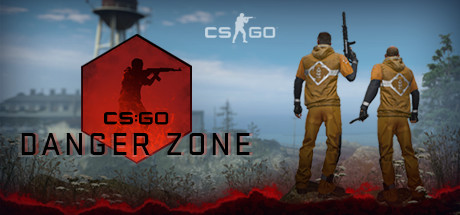

Counter-Strike: Global Offensive
Описание товара
Counter-Strike: Global Offensive (CS:GO) возрождает ураганную командную игру, впервые представленную еще 19 лет назад.
Системные требования
- ОС: Windows® XP и новее
- Процессор: Intel® Core™ 2 Duo E6600 или AMD Phenom™ X3 8750 процессор и новее
- Оперативная память: 2 GB ОЗУ
- Видеокарта: Видеокарта с 256 MB или больше с DirectX 9 с поддержкой Pixel Shader 3.0
- DirectX: Версии 9.0c и новее
- Место на диске: 15 GB
Подробное описание товара
Counter-Strike: Global Offensive (CS:GO) расширяет границы ураганной командной игры, представленной ещё 19 лет назад.
CS:GO включает в себя новые карты, персонажей, оружие и режимы игры, а также улучшает классическую составляющую CS (de_dust2 и т. п.).
«Counter-Strike удивила всю игровую индустрию, когда ничем не примечательная модификация стала одним из самых популярных шутеров в мире почти сразу после выпуска в августе 1999 года, — говорит Даг Ломбарди из Valve. — Уже на протяжении 12 лет она продолжает быть одной из самых популярных игр в мире и возглавляет киберспортивные соревнования, а по всему миру продано более 25 миллионов игр этой серии. CS:GO обещает расширить границы заслужившего известность игрового процесса и предложить его игрокам не только на ПК, но и на консолях следующего поколения и компьютерах Mac».